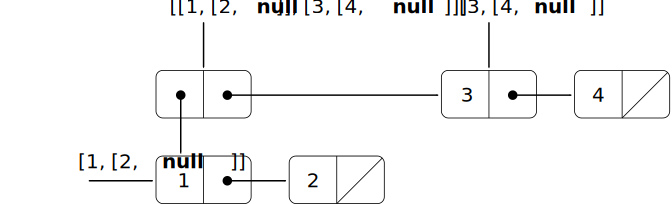

The representation of sequences in terms of lists generalizes naturally to
represent sequences whose elements may themselves be sequences. For
example, we can regard the object
((1 2) 3 4) [[1, [2, null]], [3, [4, null]]]
constructed by
Original
JavaScript
(cons (list 1 2) (list 3 4))
pair(list(1, 2), list(3, 4));
as a list of three items, the first of which is itself a list,
(1 2). Indeed, this is
suggested by the form in which the result is printed by the
interpreter.
[1, [2, null]].
Figure 2.9
Figure 2.10
shows the representation of this structure in terms of pairs.
Original
JavaScript
Figure 2.9 Structure formed by
(cons (list 1 2) (list 3 4)).

Figure 2.10 Structure formed by
pair(list(1, 2), list(3, 4)).
Another way to think of sequences whose elements are sequences is as
trees. The elements of the sequence are the branches of the
tree, and elements that are themselves sequences are subtrees.
Figure 2.11Figure 2.12
shows the structure in
figure 2.9
figure 2.10
viewed as a tree.
Original
JavaScript
Figure 2.11 The list structure in
figure 2.9
viewed as a tree.
Recursion
is a natural tool for dealing with tree structures, since we can
often reduce operations on trees to operations on their branches, which
reduce in turn to operations on the branches of the branches, and so on,
until we reach the leaves of the tree. As an example, compare the
lengthlengthprocedurefunction
of section 2.2.1 with the
count-leavescount_leavesprocedure,function,
which returns the total number of leaves of a tree:
To implement
count-leaves,count_leaves,
recall the recursive plan for computing
length:length:
LengthThe length
of a list x is 1 plus
lengththe length
of the
cdrtail
of x.
LengthThe length
of the empty list is 0.
Count-leavesThe function
count_leaves
is similar. The value for the empty list is the same:
Count-leavescount_leaves
of the empty list is 0.
But in the reduction step, where we strip off the
carhead
of the list, we must take into account that the
carhead
may itself be a tree whose leaves we need to count. Thus, the appropriate
reduction step is
Count-leavescount_leaves
of a tree x is
count-leavescount_leaves
of the
carhead
of x plus
count-leavescount_leaves
of the
cdrtail
of x.
Finally, by taking
carsheads
we reach actual leaves, so we need another base case:
Count-leavescount_leaves
of a leaf is 1.
To aid in writing recursive
proceduresfunctions
on trees,
Schemeour JavaScript environment
provides the primitive predicate
pair?,is_pair,
which tests whether its argument is a pair. Here is the complete
procedure:[1]function:[2]
Exercise 2.25
Suppose we evaluate the expression
(list 1 (list 2 (list 3 4))).
list(1, list(2, list(3, 4))).
Give the result printed by the interpreter, the corresponding
box-and-pointer structure, and the interpretation of this as a tree (as in
figure 2.11).figure 2.12).
Original
JavaScript
[1, [[2, [[3, [4, null]], null]], null]]
Exercise 2.26
Give combinations of
carsheads
and
cdrstails
that will pick 7 from each of the following
lists:lists, given in list notation:
Exercise 2.27
Suppose we define x and
y to be two lists:
Original
JavaScript
(define x (list 1 2 3))
(define y (list 4 5 6))
const x = list(1, 2, 3);
const y = list(4, 5, 6);
What result is printed by the interpreter in response to evaluating
each of the following
expressions:
What is the result of evaluating each of the
following expressions, in box notation and list notation?
Exercise 2.28
Modify your
reversereverseprocedurefunction
of exercise 2.18 to produce a
deep-reversedeep_reverseprocedurefunction
that takes a list as argument and returns as its value the list with its
elements reversed and with all sublists deep-reversed as well. For example,
Exercise 2.29
Write a
procedurefunctionfringefringe
that takes as argument a tree (represented as a list) and returns a list
whose elements are all the leaves of the tree arranged in left-to-right
order. For example,
Exercise 2.30
A binary
mobile consists of two branches, a left branch and a right
branch. Each branch is a rod of a certain length, from which hangs
either a weight or another binary mobile. We can represent a binary
mobile using compound data by constructing it from two branches (for
example, using list):
Original
JavaScript
(define (make-mobile left right)
(list left right))
function make_mobile(left, right) {
return list(left, right);
}
A branch is constructed from a length (which
must be a number) together with a structure,
which may be either a number (representing a simple weight) or another
mobile:
function make_branch(length, structure) {
return list(length, structure);
}
Write the corresponding selectors
left-branchleft_branch
and
right-branch,right_branch,
which return the branches of a mobile, and
branch-lengthbranch_length
and
branch-structure,branch_structure,
which return the components of a branch.
Using your selectors, define a
procedurefunctiontotal-weighttotal_weight
that returns the total weight of a mobile.
A mobile is said to be
balanced if the torque applied by its top-left branch is equal
to that applied by its top-right branch (that is, if the length of the
left rod multiplied by the weight hanging from that rod is equal to the
corresponding product for the right side) and if each of the submobiles
hanging off its branches is balanced. Design a predicate that tests
whether a binary mobile is balanced.
Suppose we change the representation of mobiles so that the
constructors are
Original
JavaScript
(define (make-mobile left right)
(cons left right))
(define (make-branch length structure)
(cons length structure))
function make_mobile(left, right) {
return pair(left, right);
}
function make_branch(length, structure) {
return pair(length, structure);
}
How much do you need to change your programs to convert to the new
representation?
function left_branch(m) {
return head(m);
}
function right_branch(m) {
return head(tail(m));
}
function branch_length(b) {
return head(b);
}
function branch_structure(b) {
return head(tail(b));
}
function is_weight(x){
return is_number(x);
}
function total_weight(x) {
return is_weight(x)
? x
: total_weight(branch_structure(
left_branch(x))) +
total_weight(branch_structure(
right_branch(x)));
}
With this alternative representation, the selector functions for
mobile and branch need to change as follows:
function left_branch(m) {
return head(m);
}
function right_branch(m) {
return tail(m);
}
function branch_length(b) {
return head(b);
}
function branch_structure(b) {
return tail(b);
}
Mapping over trees
Just as map is a powerful abstraction for
dealing with sequences, map together with
recursion is a powerful abstraction for dealing with trees. For instance,
the
scale-treescale_treeprocedure,function,
analogous to
scale-listscale_list
of section 2.2.1, takes as arguments a numeric
factor and a tree whose leaves are numbers. It returns a tree of the same
shape, where each number is multiplied by the factor. The recursive plan
for
scale-treescale_tree
is similar to the one for
count-leaves:count_leaves:
Another way to implement
scale-treescale_tree
is to regard the tree as a sequence of sub-trees and use
map.map.
We map over the sequence, scaling each sub-tree in turn, and return the
list of results. In the base case, where the tree is a leaf, we simply
multiply by the factor:
Many tree operations can be implemented by similar combinations of
sequence operations and recursion.
Exercise 2.31 Define a procedureDeclare a functionsquare-treesquare_tree
analogous to the
square-listsquare_listprocedurefunction
of exercise 2.22. That is,
square-treesquare_tree
should behave as follows:
Exercise 2.32
Abstract your answer to exercise 2.31 to
produce a
procedurefunctiontree-maptree_map
with the property that
square-tree
could be defined as
square_tree
could be declared as
Exercise 2.33
We can represent a
set as a list of distinct elements, and we can
represent the set of all subsets of the set as a list of lists. For
example, if the set is
(1 2 3),list(1, 2, 3),
then the set of all subsets is
(() (3) (2) (2 3) (1) (1 3) (1 2) (1 2 3)).
list(null, list(3), list(2), list(2, 3),
list(1), list(1, 3), list(1, 2),
list(1, 2, 3))
Complete the
following
definition of a proceduredeclaration of a function
that generates the set of subsets of a set and give a clear explanation of
why it works:
The argument starts in a similar way as the argument for the function
cc
in section 1.2.2: A subset either
contains the first element $e$ of the given
set, or it doesn't. If it doesn't, the problem becomes strictly smaller:
Compute all subsets of the tail of the list that represents the given
set. If it does, it must result from adding $e$
to a subset that doesn't contain $e$. In the
end, we need to append both lists of subsets to obtain the list of all
subsets.
[1]
The order of the first two clauses
in the cond matters, since the empty list
satisfies null? and also is not a
pair.
[2]
The order of the
two predicates matters, since null
satisfies is_null and also is not a
pair.